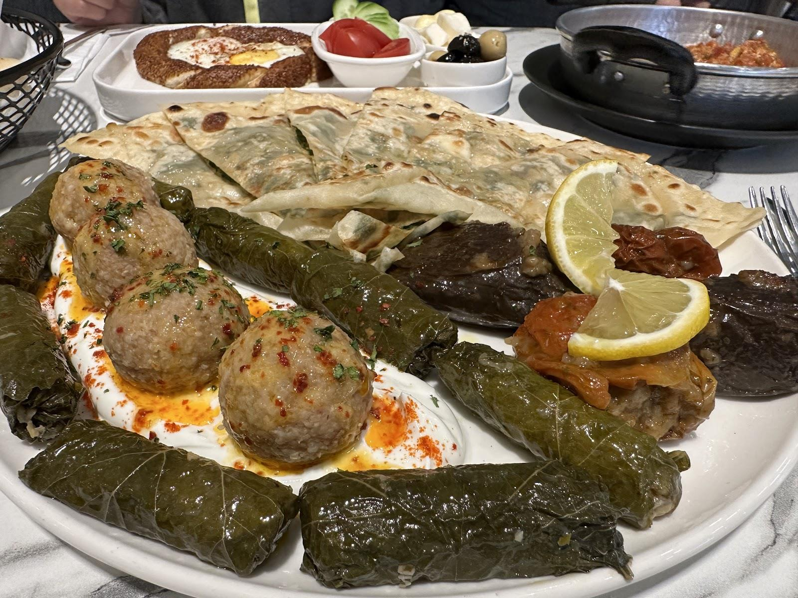

Piny menemen
Domates, biber ve yumurta.
BEYLİKDÜZÜ / WESTSIDE
CAFE · RESTAURANT · DESSERTGünün ilk sofrasından kahve molasına.
Piny’de masaya biraz zaman ayırın.

SOFRAYA BİR YER DAHA
Kahvaltıyı uzatın, öğle arasında uğrayın ya da kahvenin yanına sohbet ekleyin. Piny’nin masalarında günün farklı saatlerine yer var.
Instagram’da Piny ↗BİR KAHVELİK ARA
Defterinizi açın, sohbeti sürdürün.
Masada bir kahveye de yer olsun.
GOOGLE YORUMLARI
“Kesinlikle öneririm ben tavuk çeşitlerinden denedim ve sonrasında kahve sipariş verdim. Ardından biraz çizim yaptım.”
Sude Gündüz
Google yorumunu aç ↗“Her şey çok lezzetliydi. Sarmaya, içli köfteye, menemene bayıldık. Kahvaltıdaki her ürün özenle seçilmişti.”
Enes Soylu
Google yorumunu aç ↗Google yorumlarından kısa alıntılar. Puan ve yorum sayısı kontrol tarihindeki kaydı yansıtır.
WESTSIDE’DA BULUŞALIM
Güncel menü ve çalışma saatleri için bize ulaşabilirsiniz.